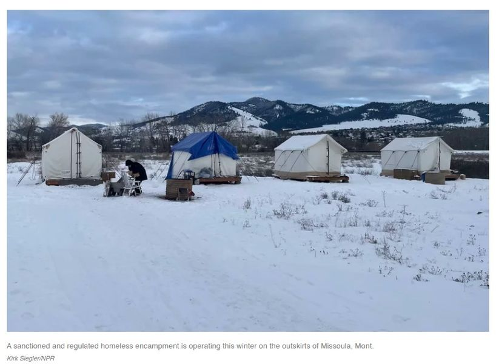

Timeline photos
Dear Mayor Horrigan (@[100064805494040:2048:City of Akron, Ohio - Mayor's Office])
In the year of 2022 I am going to be practicing enlarging my circle of compassion and understanding. As much as I enjoy making memes with you and pointing out your lack of empathy and sensitivity to unsheltered people who are living in your city RIGHT NOW while it is 16 degrees, I am going to try to be better. I can't promise I'll always get it right. I'm certainly fallible and human like everyone else. But I will try.
I wanted to let you know that Missoula Montana has chosen to use some of it's Covid Relief money to create an immediate, emergency sanctioned and regulated homeless encampment.
I am no expert in Covid Relief money. I'm sure you know what it is for better than me. But I thought it was supposed to be used for people who were directly impacted by Covid. Homeless people have clearly been effected by this with increased evictions and reduced occupancy at the shelters. I believe all your women's shelters are currently full.
I've attached a picture of the shelters Missoula has set up. They have 20 of these. (As always, I don't want any money. I just want to be able to do the work on my private land, with private money.)
Thank you for listening.
Sage